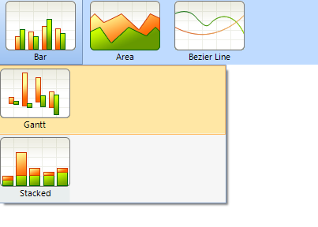
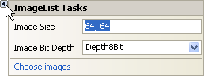
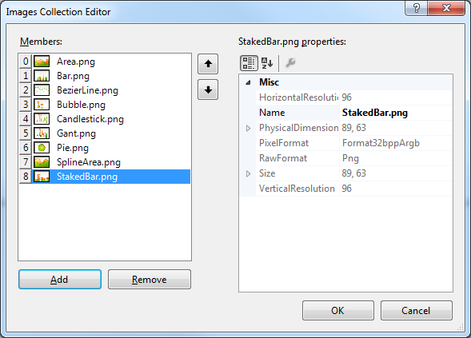
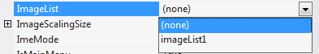
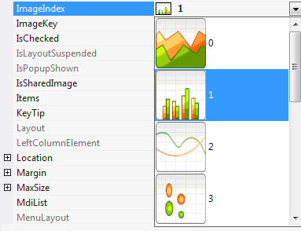

Menu Item Images
Images can be placed in both the main and sub menu items. Images can be added directly to each RadMenuItem____Image property through local and project resources or can be supplied by an ImageList component.
Local Resources
To use an image from a local resource click the RadMenuItem and in the Property window click the Images property ellipses. In the Select Resource dialog select the Local resource radio button, then click the Import...__button. In the __Open dialog navigate to an image file ("gif", "jpg", "bmp", "wmf" or "png") select the file and click the Open button. The image will display in the Select Resource dialog preview window. Click OK to close the dialog. The image will now display in the menu item.
Project Resources
To use an image from a project resource click the RadMenuItem and in the Property window click the Images property ellipses. In the Select Resource dialog select the Project resource file radio button, then click the Import...__button. In the __Open dialog navigate to an image file ("gif", "jpg", "bmp", "wmf" or "png") select the file and click the Open button. The image will display in the Select Resource dialog preview window and in the list of resources. Also notice that in the Solution Explorer a "resources" folder is added automatically that contains the new image file. Click OK to close the dialog. The image will now display in the menu item.
Using an ImageList
For consistent management of multiple images that can be used by more than one control at a time use the Windows standard ImageList__component. The __ImageList____Smart Tag allows:
- Sizing all images at one time, so you can increase the Image Size from the default 16 x 16 pixels up to 256 x 256. The example at the beginning of this topic shows a 64 x 64 image.
At increased image sizes the images will scale, but may not be attractive depending on the original resolution of the image.
Increase the Image Bit Depth up to 32 bit.
Choose images.
Click the Smart Tag Choose images link to open the Images Collection Editor dialog. Click the Add button to display the Open__dialog. In the __Open dialog navigate to an image file ("gif", "jpg", "bmp", "wmf" or "png") select the file and click the Open button. The image will display in the __Images Collection Editor Members__list. When you have selected all the images that will be in the menu, click __OK__to close the dialog.
Set __the RadMenu ImageList__property using the drop down provided in the Property Window. The drop down will pick up any ImageList components you have added to the form.
Use the ImageIndex or ImageKey properties to select the image supplied by the ImageList. ImageIndex locates the image by the integer position within the list. ImageKey locates the image using a string key value. 